Справочник по системному программированию · модуль 1 · рабочее место
1.2
C и Python вместе:
библиотека и ctypes
В главе функция ядра core_get_info из главы 1.1 собирается в динамическую библиотеку, и её вызывает программа на Python — мозг агента brain.py. Разобрано, как функция попадает в таблицу экспорта, как Python загружает библиотеку модулем ctypes, описывает структуру и передаёт её адрес. Две ошибки на стыке языков показаны на настоящем запуске: переставленные поля и пустой адрес. В конце brain.py печатает первое сообщение агента в JSON.
- Категория
- C и Python
- Уровень
- Начальный
- Что получится
- Библиотека ядра и
agent/brain/brain.py - Сколько занимает
- Пара 3, около сорока пяти минут за компьютером
§1Задача главы
Глава 1.1 закончилась функцией ядра core_get_info и программой на C, которая её вызывает. Агенту нужно, чтобы ту же функцию вызывала программа на Python — мозг агента. На Python пишутся решения агента, отправка сообщений в n8n и работа с моделями ИИ. Системные функции остаются в ядре на C. Чтобы соединить два языка, ядро собирается в динамическую библиотеку, а Python загружает её модулем ctypes из стандартной библиотеки.
К дрели подходят насадки разных производителей: сверло, бита, венчик для краски. Насадку вставляют в патрон, когда она нужна, и дрель вращает её своим мотором. Насадка подходит, если её хвостовик совпадает по форме и размеру с патроном.
Неподходящая насадка в патрон не войдёт. Несовпадение структуры в C и Python загрузке не мешает: числа читаются, но из чужих байтов.
Динамическая библиотека — файл с готовым машинным кодом функций, который загружается в процесс программы во время её работы. В Windows такой файл называется DLL и имеет расширение .dll, как kernel32.dll из ЛР 1.В macOS у такого файла расширение .dylib, как у libSystem.B.dylib из ЛР 1.В Linux у такого файла расширение .so (shared object), как у libc.so.6 из ЛР 1. Своей функции main у библиотеки нет: её функции вызывает программа, которая её загрузила.
ctypes — модуль Python, который загружает динамическую библиотеку и вызывает её функции. Он переводит значения Python в типы C и обратно: целое число Python — в int64_t, класс с полями — в структуру. Как устроены типы C, ctypes заранее не определяет: их описывают в коде на Python, и это описание должно совпасть с core.h до байта.
Ядро и мозг в одном процессе
Пунктирная рамка — один процесс. Библиотека ядра загружается в процесс Python, и её код выполняется там же, где brain.py. Сплошная стрелка — вызов функции, пунктирная — 272 байта структуры, которые функция заполнила.
Зачем это нужно в работе
- Писать каждую часть на подходящем языке. Системные вызовы и быстрый код — на C, сценарии, сеть и ИИ — на Python. Так устроены numpy, драйверы баз данных и библиотеки машинного обучения: снаружи Python, внутри C.
- Вызывать системные функции из Python. Модуль
ctypesзагружает и системные библиотеки:kernel32.dllбиблиотеку C системы. Так в главе 0.1 Python получал номер процесса без кода на C. - Находить ошибки на стыке языков. Несовпадение описания структуры в Python и в C не вызывает ошибки или предупреждения. Его находят только сверкой размеров и смещений.
Глава продолжает репозиторий sysprog-start из шага 9 главы 1.1: в agent/core лежат core.h, core_info.c и show_info.c, папка agent/brain пуста. Репозиторий открыт в VS Code. Команды выполняются в окне x64 Native Tools Command Prompt for VS 2022; Python в нём должен быть 64-битным для x64, как и компилятор.Команды выполняются во встроенном терминале VS Code из корня репозитория.
Python загружает только динамическую библиотеку, поэтому первая часть — собрать её из того же core_info.c.
§2Шаг 1. Собрать библиотеку
Программа на C из главы 1.1 собиралась в исполняемый файл, где main вызывает core_get_info. Библиотека собирается из одного core_info.c, без main. Чтобы другая программа могла найти функцию в готовом файле, функция должна попасть в таблицу экспорта — список имён и адресов функций, которые библиотека отдаёт наружу. MSVC кладёт туда только функции, отмеченные __declspec(dllexport).clang и gcc кладут туда все функции, кроме объявленных static, поэтому отметка не нужна.
Код ядра собирается на трёх системах, поэтому отметку прячут за макросом CORE_API. В Windows он раскрывается в __declspec(dllexport), в macOS и Linux — в пустое место. В core.h добавляются пять строк и одно слово перед объявлением функции:
#include <stdint.h> #define CORE_HOST_MAX 256 … int core_get_info(struct core_info *out);
#include <stdint.h> #ifdef _WIN32 #define CORE_API __declspec(dllexport) #else #define CORE_API #endif #define CORE_HOST_MAX 256 … CORE_API int core_get_info(struct core_info *out);
Макрос _WIN32 компилятор MSVC задаёт сам, поэтому #ifdef _WIN32 выбирает ветку Windows без настройки. Файл core_info.c не меняется. Из папки agent/core собираем библиотеку:
cd agent\core cl /nologo /W4 /LD core_info.c /Fe:sentry_core.dll dir /b sentry_core.*
cd agent/core clang -Wall -Wextra -shared -fPIC -o libsentry_core.dylib core_info.c ls libsentry_core.dylib
cd agent/core gcc -Wall -Wextra -shared -fPIC -o libsentry_core.so core_info.c ls libsentry_core.so
Ключ /LD собирает DLL вместо .exe, /Fe: задаёт имя файла.
Ключ -shared собирает динамическую библиотеку вместо исполняемого файла. Ключ -fPIC делает код независимым от адреса: библиотека может загрузиться в любое место памяти процесса. Имя по соглашению начинается с lib.
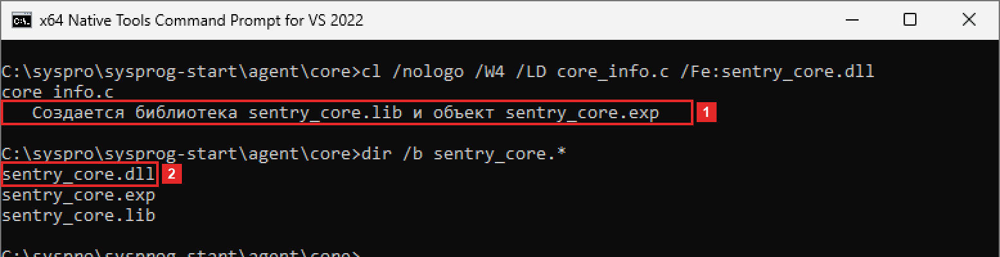
sentry_core.lib и sentry_core.exp. 2 Сама библиотека.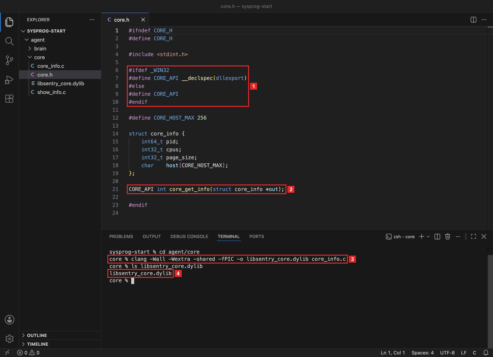
CORE_API. 2 Отметка перед объявлением функции. 3 Сборка библиотеки — без сообщений. 4 Файл libsentry_core.dylib появился, он виден и в панели слева.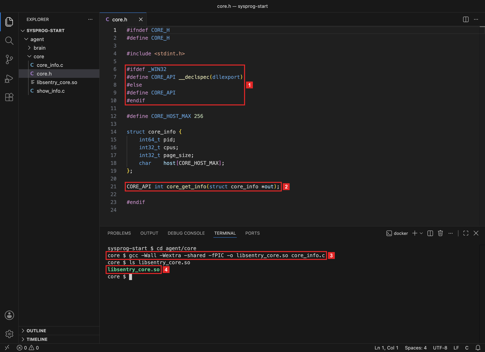
CORE_API. 2 Отметка перед объявлением функции. 3 Сборка библиотеки — без сообщений. 4 Файл libsentry_core.so появился, он виден и в панели слева.Строка 1 — сообщение компоновщика: «Создается библиотека sentry_core.lib и объект sentry_core.exp». Файл .lib нужен программам на C, которые подключают DLL при сборке; Python его не использует. В папке три файла 2, и все три исключены в .gitignore шаблона: библиотека собирается из исходников на каждом компьютере.
Сборка 3 прошла без предупреждений, и в папке 4 появился файл библиотеки. Шаблон репозитория уже исключает его в .gitignore: библиотека собирается из исходников на каждом компьютере.
Что получилось.Ядро собрано в библиотеку sentry_core.dlllibsentry_core.dyliblibsentry_core.so. Перед загрузкой в Python стоит проверить, что функция в ней видна по имени.
§3Шаг 2. Проверить таблицу экспорта
Таблицу экспорта печатает служебная программа: dumpbin из набора MSVCnm из инструментов разработчика Xcodenm из пакета binutils. По ней видно, найдёт ли Python функцию по имени.
dumpbin /nologo /exports sentry_core.dll
nm -gU libsentry_core.dylib
nm -D --defined-only libsentry_core.so
Ключ /exports печатает только таблицу экспорта.
Ключ -g оставляет только внешние имена, -U убирает имена, которые библиотека берёт из других библиотек.
Ключ -D читает таблицу динамических имён, --defined-only убирает имена, которые библиотека берёт из других библиотек.
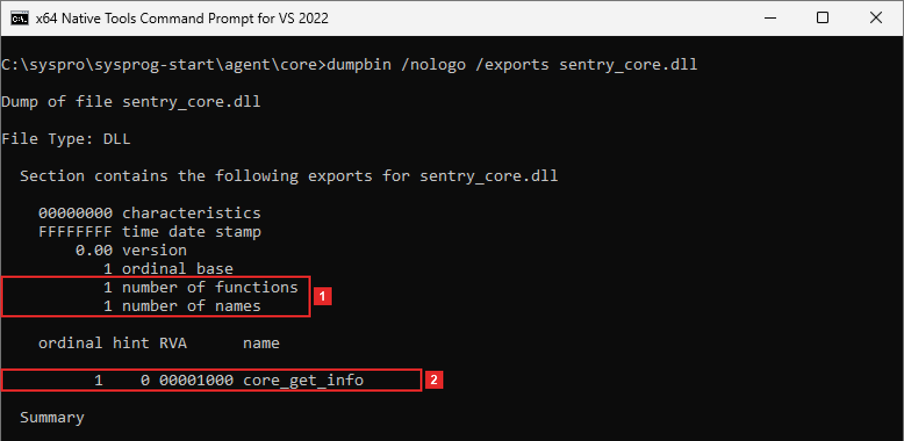
00001000, имя core_get_info.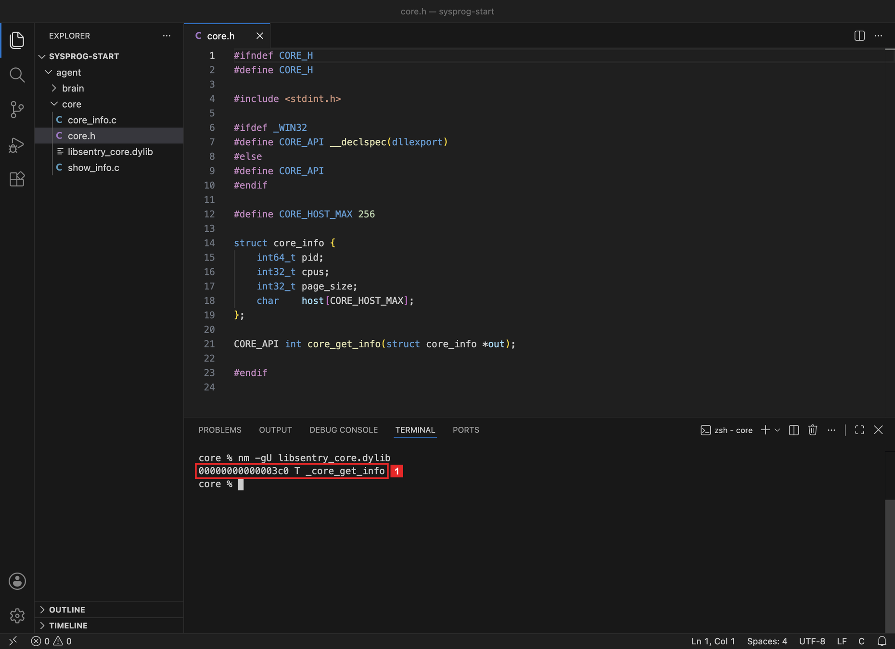
_core_get_info с буквой T.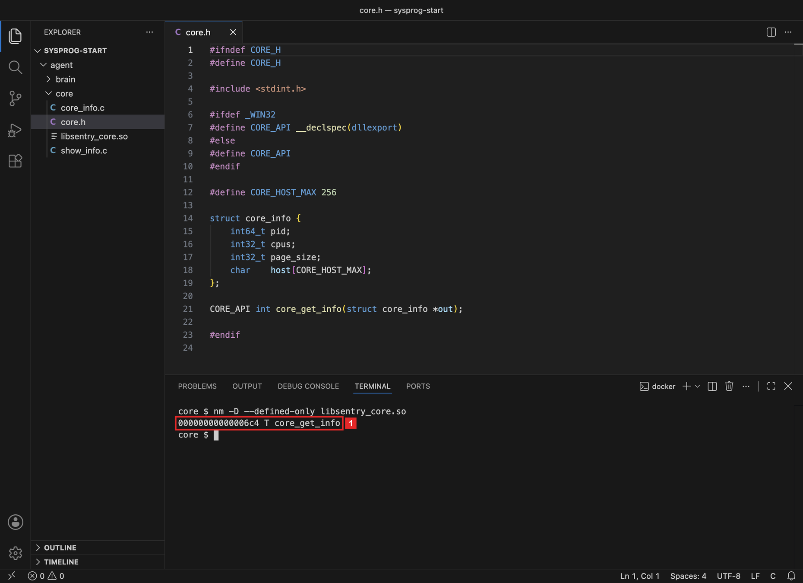
core_get_info с буквой T.Строки 1 показывают, что экспортирована одна функция. В строке 2 имя совпадает с именем в коде: для функций C компилятор MSVC в 64-битной сборке имя не меняет. Если убрать CORE_API из core.h и собрать заново, функций в таблице не будет, и Python не найдёт core_get_info.
Буква T 1 означает, что имя относится к коду (секция text) и определено в этой библиотеке. Перед именем стоит подчёркивание: так macOS записывает имена функций C. При вызове из Python подчёркивание не пишут: при поиске имени его добавляет загрузчик macOS.
Буква T 1 означает, что имя относится к коду (секция text) и определено в этой библиотеке. Имя совпадает с именем в коде, под ним Python и найдёт функцию.
Что получилось.Функция core_get_info есть в таблице экспорта. Библиотеку можно загружать из Python.
§4Шаг 3. Загрузить библиотеку
Создаём файл agent/brain/brain.py. В первой версии он только загружает библиотеку и печатает, что получилось:
import ctypes import sys from pathlib import Path CORE_DIR = Path(__file__).resolve().parent.parent / "core" LIB_NAME = {"win32": "sentry_core.dll", "darwin": "libsentry_core.dylib"}.get(sys.platform, "libsentry_core.so") core = ctypes.CDLL(str(CORE_DIR / LIB_NAME)) print(core) print(core.core_get_info)
Разбор по строкам.
Path(__file__).resolve().parent.parent / "core"— путь к папке ядра от места, где лежит самbrain.py: на уровень вверх изbrainи вcore. Так скрипт находит библиотеку, из какой бы папки его ни запустили.sys.platform— строка с названием системы:win32,darwin(macOS) илиlinux. По ней выбирается имя файла библиотеки; для Linux имя берётся по умолчанию из.get.ctypes.CDLL(путь)— загружает библиотеку в процесс и возвращает объект, через который доступны её функции.CDLLвызывает функции по обычному соглашению C. Путь передаётся строкой, поэтомуPathобёрнут вstr.core.core_get_info— функция ищется в таблице экспорта при первом обращении к имени. Если имени нет, Python сообщитAttributeError.
Запускаем из папки agent/brain:
cd ..\brain python brain.py
cd ../brain python3 brain.py
cd ../brain python3 brain.py
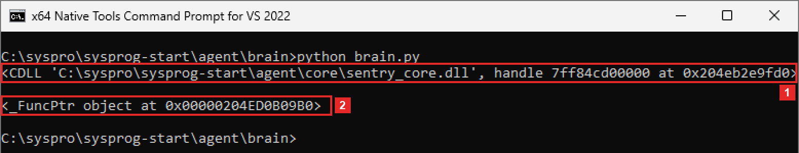
sentry_core.dll и её адрес в процессе (handle). 2 Объект функции.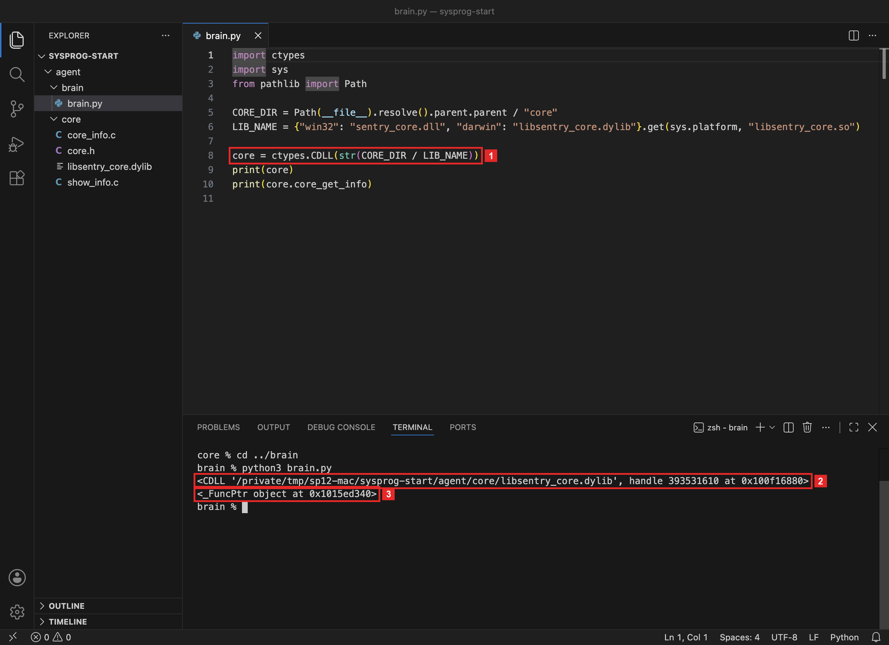
_FuncPtr.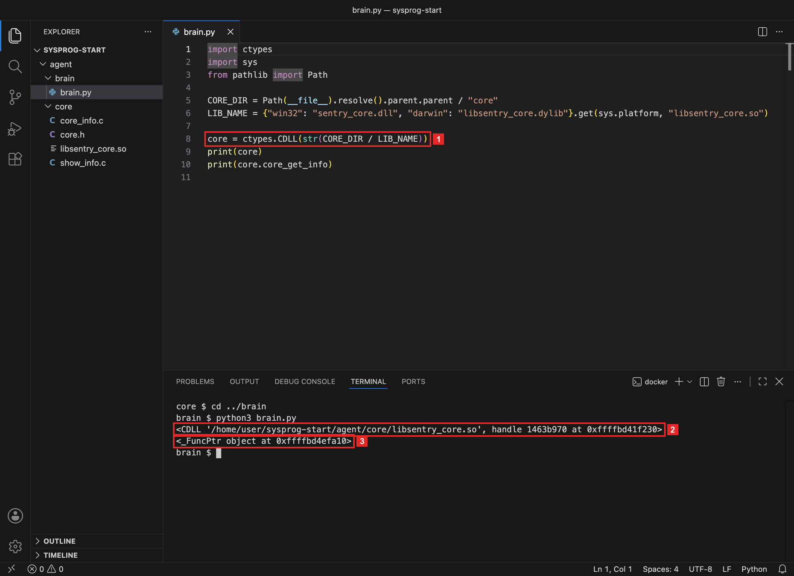
_FuncPtr.Число после слова handle — адрес, по которому библиотека загружена в память процесса Python. Объект функции _FuncPtr хранит адрес функции внутри библиотеки. Сколько у функции параметров и какого они типа, в объекте функции пока не записано.
Процесс выполняет код одной архитектуры, поэтому 64-битный Python для x64 загружает только DLL для x64. Кадры главы сняты на компьютере с процессором ARM, где установлен и Python для ARM64. Если запустить brain.py им, загрузка падает:
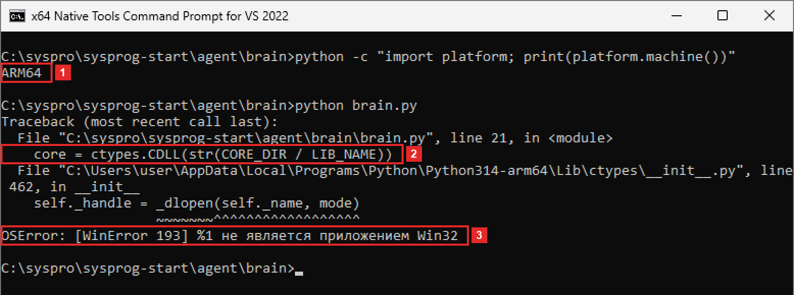
WinError 193 — файл не подходит процессу.Код 193 — ERROR_BAD_EXE_FORMAT. Архитектуру Python показывает python -c "import platform; print(platform.machine())": для окна x64 Native Tools нужен ответ AMD64.
Что получилось.Библиотека загружена в процесс Python, функция найдена по имени. Чтобы её вызвать, Python должен знать, как устроена структура core_info.
§5Шаг 4. Описать структуру в Python
Структура описывается классом, унаследованным от ctypes.Structure. Его атрибут _fields_ — список пар «имя поля — тип ctypes» в том же порядке, что в core.h. По этому списку ctypes сам считает размер и смещения, применяя те же правила выравнивания, что компилятор C. Каждому типу C из core.h соответствует тип ctypes:
| Поле | Тип в core.h | Тип ctypes | Байт |
|---|---|---|---|
pid | int64_t | ctypes.c_int64 | 8 |
cpus | int32_t | ctypes.c_int32 | 4 |
page_size | int32_t | ctypes.c_int32 | 4 |
host | char[256] | ctypes.c_char * 256 | 256 |
Запись ctypes.c_char * 256 — массив из 256 элементов типа c_char, как char host[256] в C. Во второй версии brain.py после путей появляется класс, а вместо загрузки — проверка размера и смещений:
class CoreInfo(ctypes.Structure): _fields_ = [ ("pid", ctypes.c_int64), ("cpus", ctypes.c_int32), ("page_size", ctypes.c_int32), ("host", ctypes.c_char * 256), ] print("sizeof", ctypes.sizeof(CoreInfo)) for name, _ in CoreInfo._fields_: field = getattr(CoreInfo, name) print(f"{name:10} offset {field.offset:3} size {field.size}")
У каждого поля класса есть атрибуты offset — смещение от начала структуры — и size — размер в байтах. Функция getattr(CoreInfo, name) берёт поле по имени-строке из _fields_. Запускаем python brain.pypython3 brain.py:
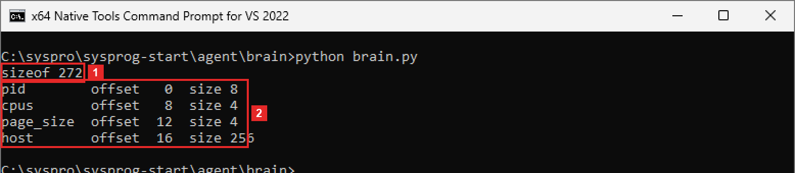
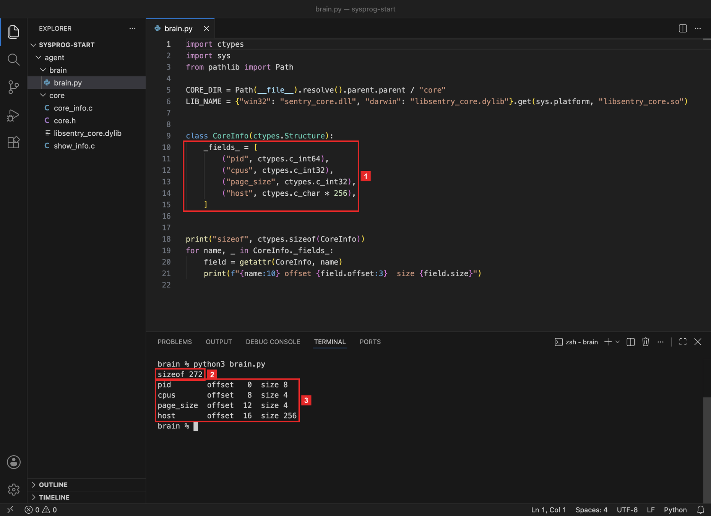
_fields_. 2 Размер — 272. 3 Смещения 0, 8, 12, 16 и размеры полей.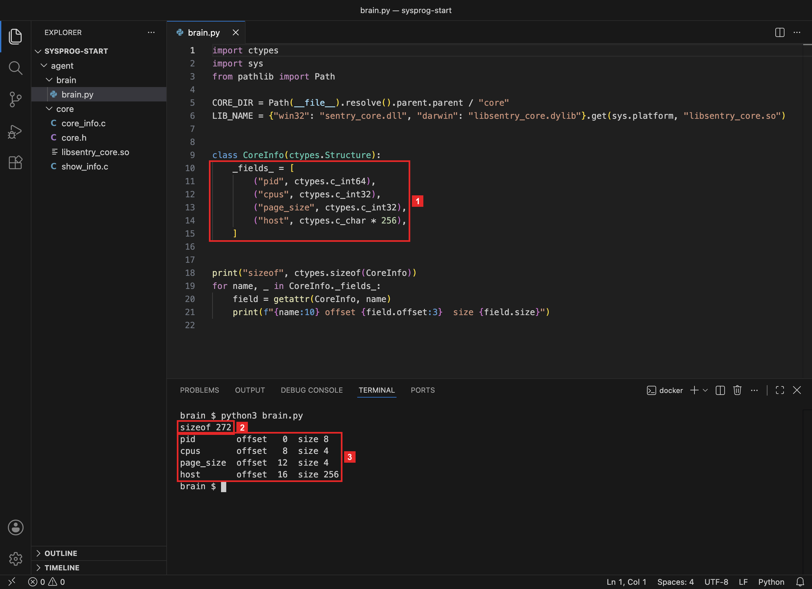
_fields_. 2 Размер — 272. 3 Смещения 0, 8, 12, 16 и размеры полей.Числа совпали с раскладкой из шага 5 главы 1.1, которую посчитал компилятор C:
Совпадение размера и смещений — единственная проверка, что описание в Python верное. Сами ctypes и компилятор её не делают: класс CoreInfo с core.h автоматически не сравнивается.
Что получилось.Класс CoreInfo описывает те же 272 байта, что struct core_info. Можно вызывать функцию.
§6Шаг 5. Вызвать функцию ядра
Перед звонком в справочную записывают, что спросить и в каком виде ждать ответ: номер телефона или адрес. Без такой записи легко назвать не тот документ и не понять ответ.
Оператор переспросит, если вопрос непонятен. Функция на C параметр не проверяет: она прочитает переданные байты как адрес структуры.
У функции на C в библиотеке нет сведений о типах параметров: в таблице экспорта только имя и адрес. Поэтому типы задают в Python двумя атрибутами объекта функции. argtypes — список типов параметров: один параметр, указатель на CoreInfo, записывается как ctypes.POINTER(CoreInfo). restype — тип результата, ctypes.c_int. Если передать значение другого типа, ctypes не вызывает функцию и поднимает исключение ArgumentError.
Третья версия brain.py загружает библиотеку, задаёт типы и вызывает функцию. Её начало до класса включительно такое же, как в шаге 4, и добавлен import os:
core = ctypes.CDLL(str(CORE_DIR / LIB_NAME)) core.core_get_info.argtypes = [ctypes.POINTER(CoreInfo)] core.core_get_info.restype = ctypes.c_int info = CoreInfo() err = core.core_get_info(ctypes.byref(info)) print("err ", err) print("pid ", info.pid, " os.getpid():", os.getpid()) print("cpus ", info.cpus) print("page_size", info.page_size) print("host ", info.host)
CoreInfo() создаёт структуру в памяти Python, все 272 байта — нули. ctypes.byref(info) передаёт её адрес, как &info в C. Функция os.getpid() печатает номер процесса Python для сравнения. Запускаем python brain.pypython3 brain.py:
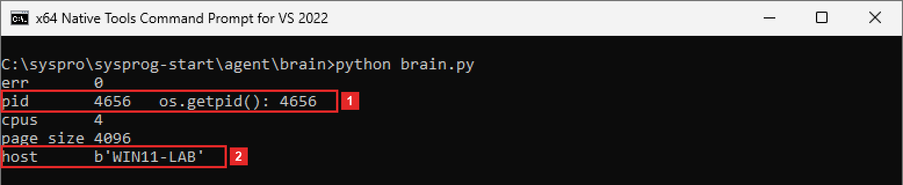
os.getpid() — тоже 4656. 2 Имя компьютера пришло строкой байтов b'WIN11-LAB'.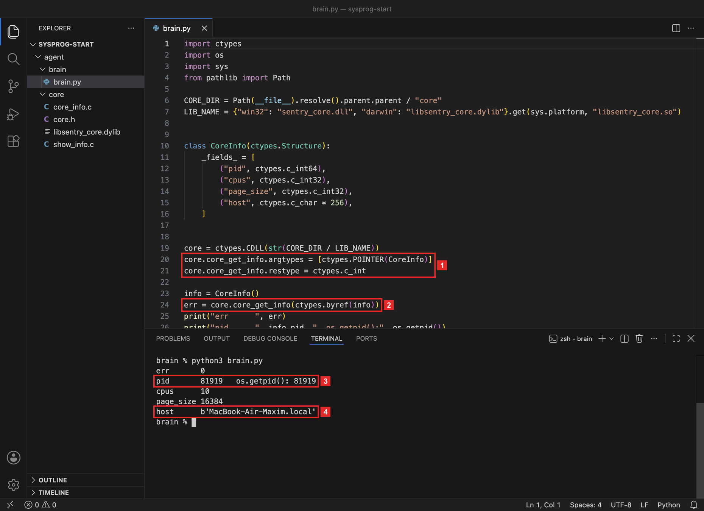
os.getpid(). 4 Имя пришло строкой байтов b'…'.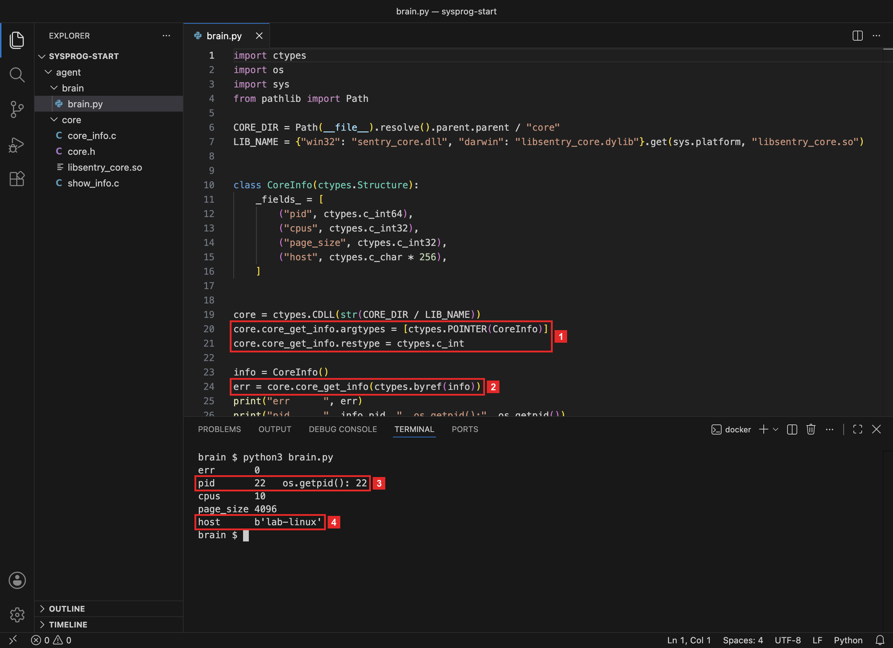
os.getpid(). 4 Имя пришло строкой байтов b'lab-linux'.Функция вернула 0, поля заполнены. Номер процесса из ядра совпал с номером процесса Python: getpid внутри библиотеки вернул номер того процесса, в который библиотека загружена. Это то, что показывает схема в §1, — ядро и мозг работают в одном процессе.
Поле host ctypes вернул как bytes — последовательность байтов до первого нуля, на что указывает буква b перед кавычками. Строкой Python оно станет после .decode("utf-8"): ядро в главе 1.1 отдаёт имя в UTF-8 на всех трёх системах.
Что получилось.Python вызвал функцию ядра на C и прочитал все четыре поля. Следующая часть — что происходит, когда описание на стыке языков неверное.
§7Шаг 6. Поменять поля местами
Первая ошибка на стыке языков — описание полей, которое не совпадает с C. Для опыта переставим в _fields_ два поля по 4 байта. Размер структуры от этого не меняется:
("cpus", ctypes.c_int32), ("page_size", ctypes.c_int32),
("page_size", ctypes.c_int32), ("cpus", ctypes.c_int32),
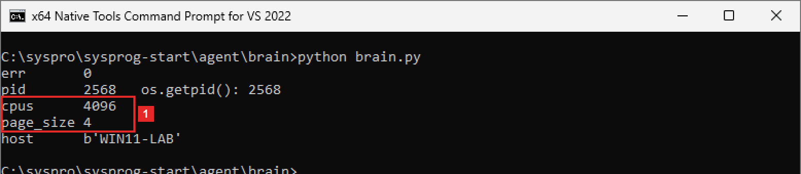
cpus — 4096, page_size — 4. Ошибки нет, err равен 0.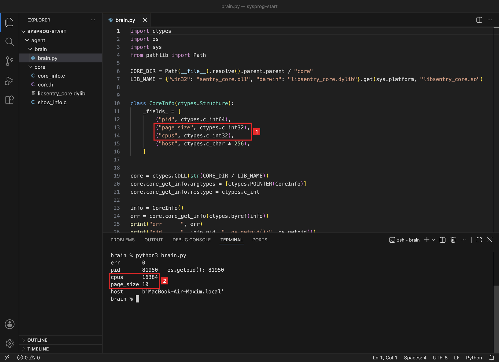
cpus — 16384, page_size — 10. Ошибки нет, err равен 0.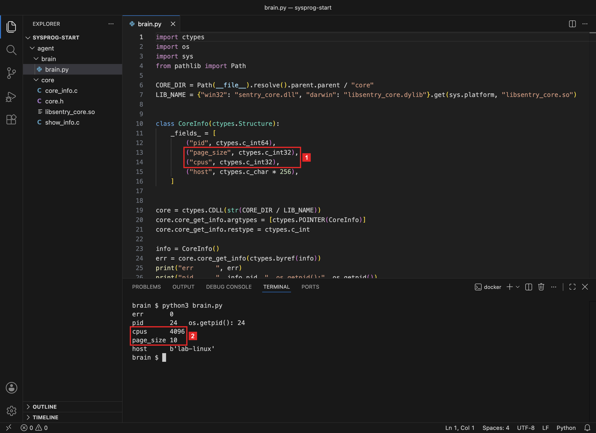
cpus — 4096, page_size — 10. Ошибки нет, err равен 0.Числа поменялись местами, а сообщений об ошибке не было. Функция на C записала число процессоров в байты 8–11, а размер страницы — в байты 12–15, как задано в core.h. Python прочитал байты 8–11 под именем page_size, потому что так написано в его описании. ctypes читает поля по смещениям из _fields_. Что записал C, он не проверяет.
Здесь ошибку видно сразу: тысяч процессоров на компьютере не бывает. Если бы поменялись два поля одного смысла, например два счётчика, неверные числа ушли бы дальше в тревоги агента. Поэтому описание в Python сверяют с core.h по таблице шага 4 при каждой правке структуры. Возвращаем порядок полей.
Что получилось.Несовпадение описания полей не даёт ошибки: значения читаются из чужих байтов. Вторая ошибка на стыке — неверный адрес.
§8Шаг 7. Передать пустой адрес
В Python пустому указателю NULL соответствует None. ctypes разрешает передать None туда, где ждут указатель, поэтому такой вызов пройдёт проверку argtypes. В главе 1.1 функция ядра начинается с проверки if (out == NULL) — теперь видно, зачем она. Пятая версия вместо структуры передаёт None и печатает код с текстом:
err = core.core_get_info(None) if sys.platform == "win32": print("err", err, ctypes.FormatError(err)) else: print("err", err, os.strerror(err))
Текст ошибки по коду в macOS и Linux возвращает os.strerror, в Windows — ctypes.FormatError: это вызов FormatMessageW из шага 4 главы 1.1, обёрнутый в ctypes.
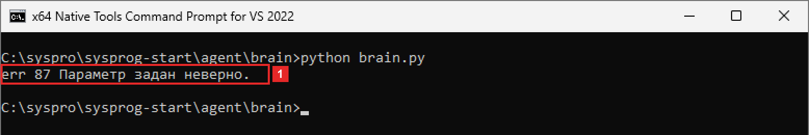
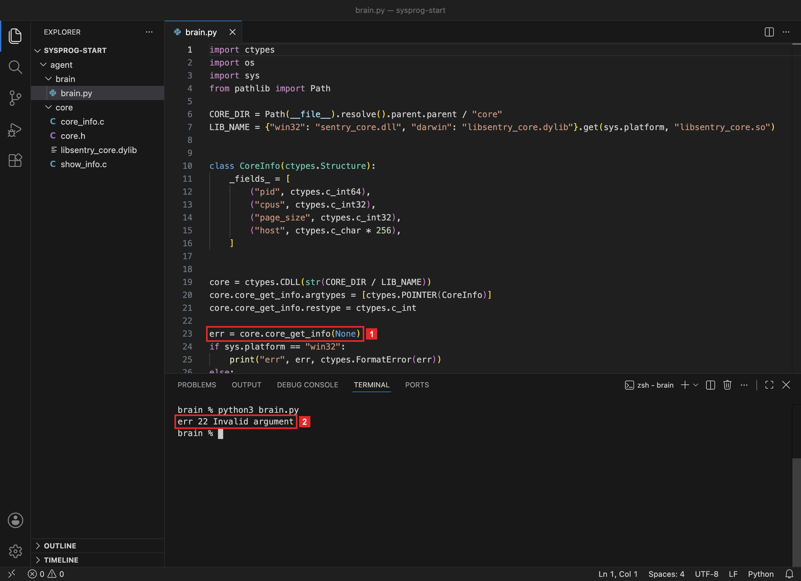
None. 2 Код 22 — EINVAL, «Invalid argument».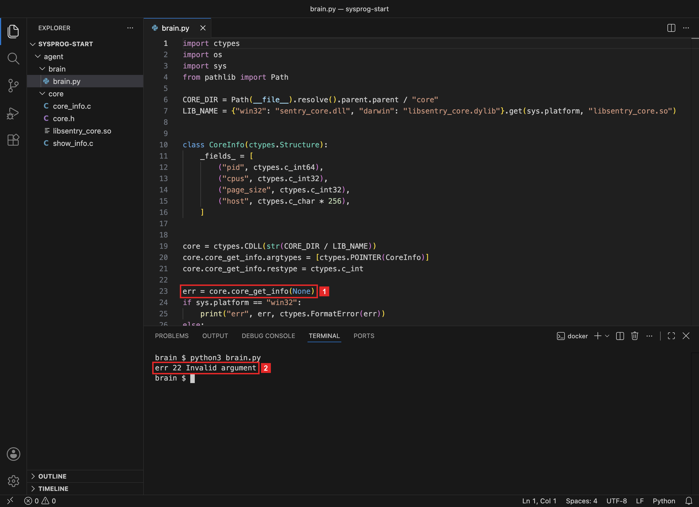
None. 2 Код 22 — EINVAL, «Invalid argument».Функция вернула код ошибки, и процесс продолжил работу. Без проверки в ядре функция стала бы записывать нули по нулевому адресу.
В Windows ctypes перехватывает такое обращение к памяти и поднимает в Python исключение OSError с текстом «access violation». Процесс продолжает работу, но что успела испортить функция до сбоя, неизвестно.
Если убрать из core_info.c строки с NULL и пересобрать библиотеку, python3 brain.py завершается без вывода с кодом 139. Это 128 плюс 11 — номер сигнала SIGSEGV. Python не успевает поднять исключение: система завершает весь процесс, потому что ядро и мозг работают в одном процессе.
Поэтому ядро проверяет всё, что ему передают, и отвечает кодом ошибки.
Что получилось.Ядро возвращает код на неверный адрес, и Python получает его текст. Осталось собрать окончательный brain.py, который превращает код ошибки в исключение.
§9Шаг 8. Собрать brain.py
Окончательная версия собирает шаги 3–7 в функцию get_info. Она возвращает словарь Python, а при коде ошибки поднимает исключение OSError с кодом и текстом — так же поступают функции Python для работы с файлами. При запуске скрипт печатает первое сообщение агента в формате JSON:
"""Мозг агента: загружает ядро на C и получает сведения о системе.""" import ctypes import json import os import sys from pathlib import Path CORE_DIR = Path(__file__).resolve().parent.parent / "core" LIB_NAME = {"win32": "sentry_core.dll", "darwin": "libsentry_core.dylib"}.get(sys.platform, "libsentry_core.so") class CoreInfo(ctypes.Structure): _fields_ = [ ("pid", ctypes.c_int64), ("cpus", ctypes.c_int32), ("page_size", ctypes.c_int32), ("host", ctypes.c_char * 256), ] core = ctypes.CDLL(str(CORE_DIR / LIB_NAME)) core.core_get_info.argtypes = [ctypes.POINTER(CoreInfo)] core.core_get_info.restype = ctypes.c_int def error_text(code): if sys.platform == "win32": return ctypes.FormatError(code) return os.strerror(code) def get_info(): info = CoreInfo() err = core.core_get_info(ctypes.byref(info)) if err != 0: raise OSError(err, error_text(err)) return { "pid": info.pid, "cpus": info.cpus, "page_size": info.page_size, "host": info.host.decode("utf-8"), } if __name__ == "__main__": message = {"event": "agent_started", "os": sys.platform, **get_info()} print(json.dumps(message, ensure_ascii=False, indent=2))
error_text— текст ошибки по коду, отдельно для Windows и для macOS и Linux.raise OSError(err, error_text(err))— код ядра становится исключением. Тот, кто вызываетget_info, обрабатывает его черезtry/except OSError.info.host.decode("utf-8")— имя из байтов в строку Python.if __name__ == "__main__":— блок выполняется, только когдаbrain.pyзапущен как программа. Если его подключат командойimport, сообщение не печатается.**get_info()— поля словаря вставляются в сообщение рядом сeventиos.
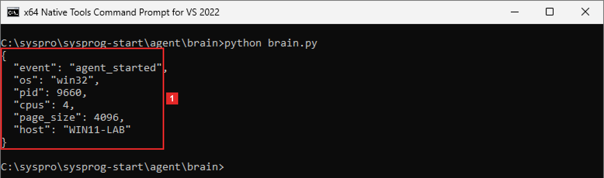
agent_started в JSON: система win32, номер процесса, 4 процессора, страница 4096, имя WIN11-LAB.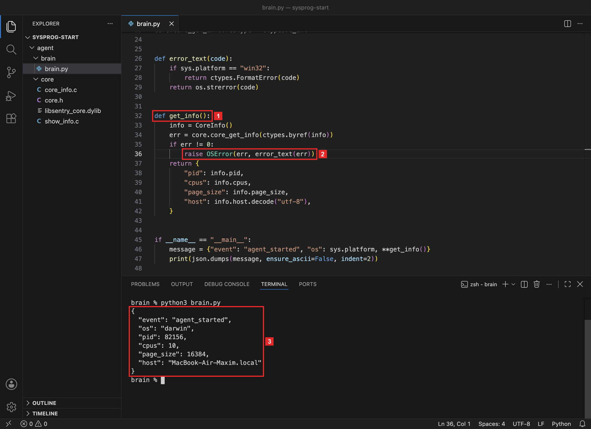
get_info. 2 Код ошибки становится исключением. 3 Сообщение agent_started в JSON с системой darwin.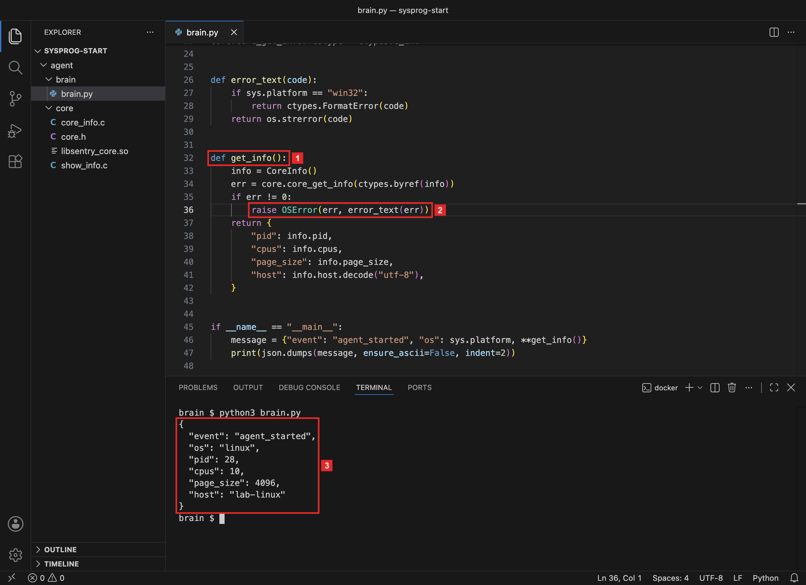
get_info. 2 Код ошибки становится исключением. 3 Сообщение agent_started в JSON: linux, номер процесса 28, 10 процессоров, страница 4096, lab-linux.Сообщение готово к отправке: в формате JSON его принимает сценарий n8n. Файл brain.py и изменённый core.h отправляем в репозиторий; в agent/brain/README.md дописываем строку о brain.py, в agent/core/README.md — о сборке библиотеки:
git add agent/core/core.h agent/core/README.md agent/brain/brain.py agent/brain/README.md git commit -m "brain: brain.py вызывает core_get_info через ctypes" git push
Файл библиотеки в список не входит: его исключает .gitignore, и git status его не показывает.
Что получилось.Мозг агента на Python вызывает ядро на C и печатает сведения о системе в JSON. Последняя часть — проверка описания структуры, которое сгенерирует помощник ИИ.
§10Запрос к помощнику ИИ
Описание структуры для ctypes — частый запрос к помощнику ИИ: его можно сгенерировать по core.h. В режиме Р1 из главы 0.3 ответ сверяется с кодом и кадрами. Запрос:
Вот файл core.h. Напиши для него класс ctypes.Structure и задай argtypes и restype для функции core_get_info. Библиотека загружается на Windows, macOS и Linux.
- типы полей точного размера:
c_int64,c_int32;c_longв 64-битной Windows — 4 байта, какlongв C; - порядок полей как в
core.h, массив —c_char * 256; argtypes—[ctypes.POINTER(CoreInfo)],restype—ctypes.c_int;- сгенерированный класс проходит проверку шага 4:
sizeof— 272, смещения 0, 8, 12, 16.
Последний пункт проверяется запуском: в шаге 6 неверное описание не дало ни одной ошибки.
§11Справка: команды и ctypes
| Что нужно | Windows | macOS | Linux |
|---|---|---|---|
| Собрать библиотеку | cl /LD a.c /Fe:x.dll | clang -shared -fPIC -o libx.dylib a.c | gcc -shared -fPIC -o libx.so a.c |
| Отметить функцию для экспорта | __declspec(dllexport) | не нужно | не нужно |
| Таблица экспорта | dumpbin /exports x.dll | nm -gU libx.dylib | nm -D --defined-only libx.so |
| Архитектура Python | python -c "import platform; print(platform.machine())" | ||
| В C | В ctypes |
|---|---|
int, int32_t, int64_t | c_int, c_int32, c_int64 |
char buf[N] | c_char * N, значение — bytes |
struct x { … } | класс от ctypes.Structure с _fields_ |
struct x * в объявлении | ctypes.POINTER(X) в argtypes |
&info при вызове | ctypes.byref(info) |
NULL | None |
sizeof(struct x), смещение поля | ctypes.sizeof(X), X.поле.offset |
| текст ошибки | os.strerror(code); в Windows ctypes.FormatError(code) |
§12Частые вопросы
_fields_, argtypes, restype.core.h.os.getpid(). Падение в ядре завершает и Python.core.h и core_info.c, файлы .dll, .dylib, .so исключены в .gitignore.§13Проверьте себя
Почему в Windows функцию нужно отметить __declspec(dllexport), а в macOS и Linux — нет?
MSVC кладёт в таблицу экспорта DLL только отмеченные функции. clang и gcc экспортируют все функции, кроме static. Макрос CORE_API даёт отметку только при сборке в Windows.
Какой командой проверить, что функция попала в библиотеку?
dumpbin /exports в Windows, nm -gU в macOS, nm -D --defined-only в Linux. В выводе должно быть имя core_get_info.
Чему равны ctypes.sizeof(CoreInfo) и смещение поля host, если описание верное?
272 и 16 — столько же, сколько у struct core_info в C.
Зачем задавать argtypes, если вызов работает и без них?
С argtypes ctypes проверяет тип каждого параметра и откажется передать, например, число вместо указателя. Без них значение уходит в функцию как есть, и C прочитает его как адрес.
Почему поле host приходит как b'lab-linux' и что с ним делать?
Массив c_char ctypes отдаёт как bytes до первого нуля. Строкой Python оно становится после .decode("utf-8").
Что означает OSError: [WinError 193] при загрузке DLL?
Архитектура DLL не совпадает с архитектурой Python, например DLL для x64 и Python для ARM64. Библиотеку собирают компилятором той же архитектуры, что и Python.
§14Шпаргалка по главе
cl /LD core_info.c /Fe:sentry_core.dllclang -shared -fPIC -o libsentry_core.dylib core_info.cgcc -shared -fPIC -o libsentry_core.so core_info.cв Windows — CORE_APIdumpbin /exports sentry_core.dllnm -gU libsentry_core.dylibnm -D --defined-only libsentry_core.socore = ctypes.CDLL(str(путь))архитектура Python = архитектура библиотекиclass CoreInfo(ctypes.Structure)_fields_ в порядке core.hctypes.sizeof = 272argtypes = [ctypes.POINTER(CoreInfo)]restype = ctypes.c_intcore.core_get_info(ctypes.byref(info))raise OSError(код, текст)None = NULLИтог главы
Ядро агента собрано в динамическую библиотеку из того же core_info.c. В Windows функция отмечена __declspec(dllexport) через макрос CORE_API, в macOS и Linux она экспортируется без отметки, и таблица экспорта это показывает. Python загружает библиотеку модулем ctypes в свой процесс, поэтому архитектура библиотеки и Python должна совпадать. Структура описана классом с _fields_, типы параметров — в argtypes и restype, адрес передаётся через byref. Описание в Python ничем не сверяется с core.h: переставленные поля дали неверные числа без ошибки, поэтому размер и смещения проверяются запуском. Пустой адрес ядро отклоняет кодом ошибки, и brain.py превращает этот код в OSError. Итог — brain.py, который печатает сообщение agent_started в JSON.
- Кадры и выводы: macOS 26.1, Apple clang 17.0.0, Python 3.12.12; Linux — контейнер Debian 13, gcc 14.4, Python 3.13.5; Windows 11 ARM64 в VirtualBox, MSVC 19.44 (x64), Python 3.14.0 для x64 и для ARM64; VS Code 1.138.
- ctypes:
CDLL,Structure,_fields_,argtypes,restype,byref,FormatError— документация Python, ctypes. __declspec(dllexport)и экспорт из DLL — Microsoft Learn; ключ/LD— Microsoft Learn;dumpbin /exports— Microsoft Learn.- Код 193
ERROR_BAD_EXE_FORMAT— Microsoft Learn, System Error Codes. - Ключи
-sharedи-fPIC— документация GCC;nm— документация binutils.